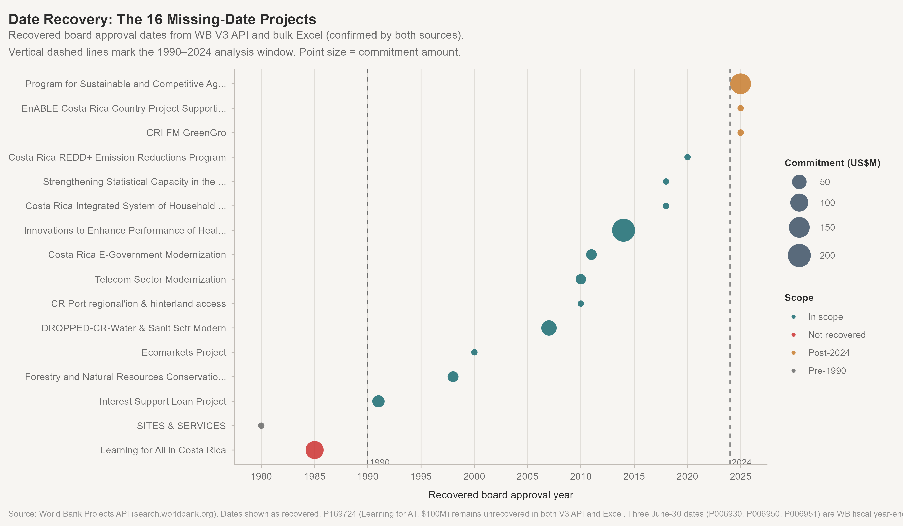
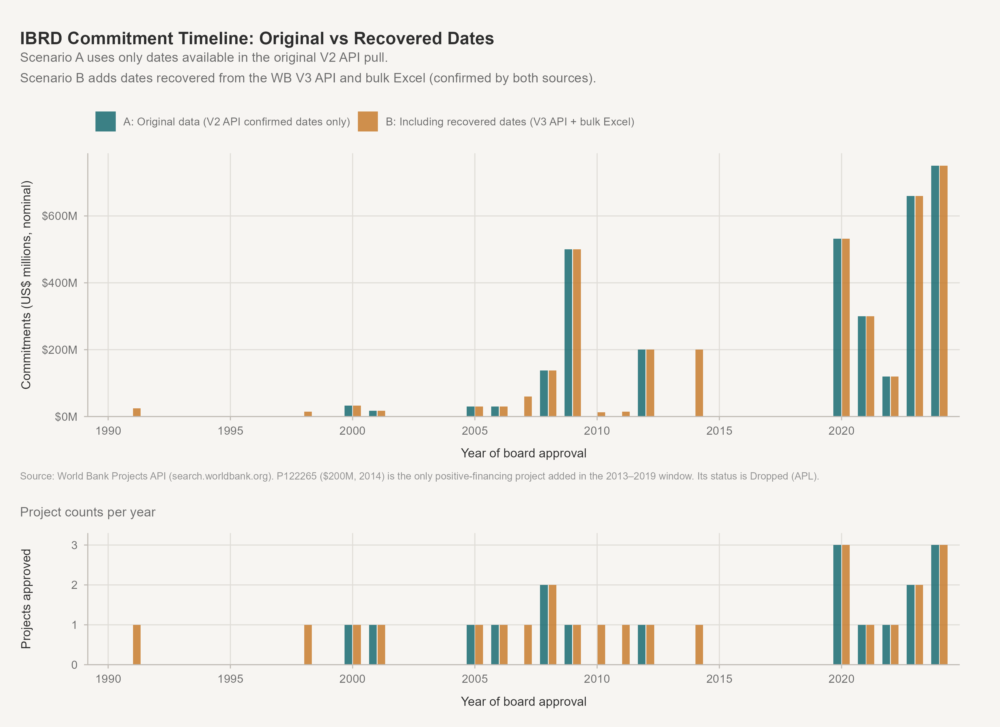
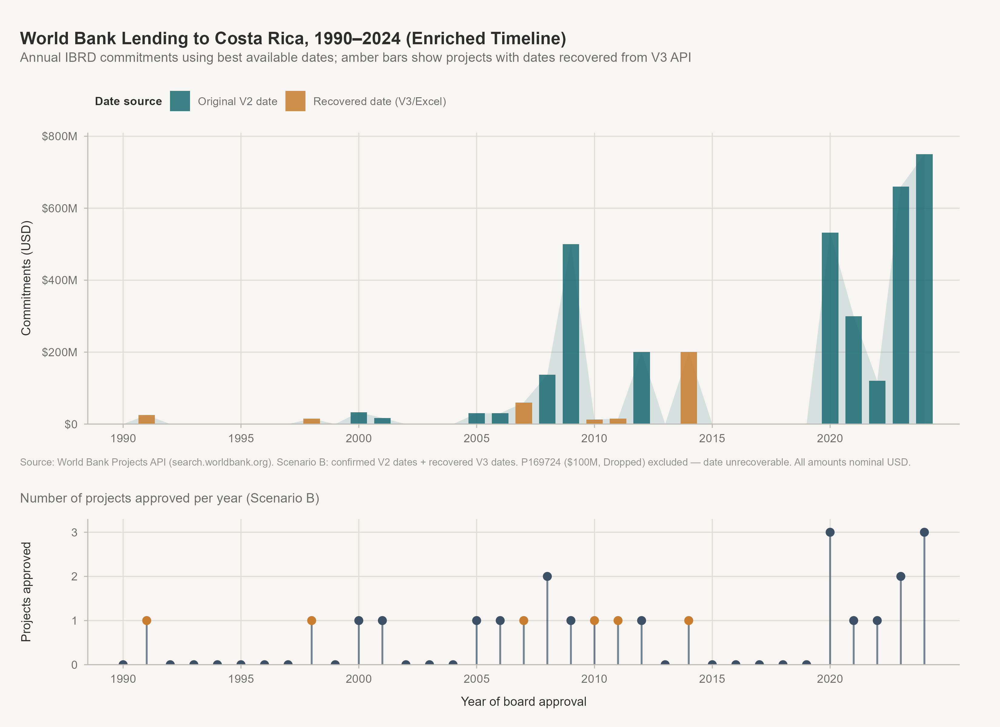

| Project ID | Project name | Commitment | Status | Instrument | Sector 1 | Close date |
|---|---|---|---|---|---|---|
| P122265 | Innovations to Enhance Performance of Health Care Networks in Costa Rica | $200M | Dropped | Adaptable Program Loan | Health | NA |
| P082974 | DROPPED-CR-Water & Sanit Sctr Modern | $60M | Dropped | Specific Investment Loan | Water Supply | NA |
| P508347 | CRI FM GreenGro | Zero | Pipeline | Development Policy Lending | NA | NA |
| P160368 | Costa Rica REDD+ Emission Reductions Program | Zero | Active | Investment Project Financing | Forestry | 2025-12-31 |
| P006930 | SITES & SERVICES | Zero | Closed | Specific Investment Loan | (Historic)Urban development adjustment | NA |
| P006951 | Forestry and Natural Resources Conservation Project | $15M | Dropped | Specific Investment Loan | NA | NA |
| P169724 | Learning for All in Costa Rica | $100M | Dropped | Investment Project Financing | NA | NA |
| P167926 | Strengthening Statistical Capacity in the Ministry of Public Education | Zero | Dropped | Investment Project Financing | NA | NA |
| P163431 | Costa Rica Integrated System of Household Surveys | Zero | Closed | Investment Project Financing | Central Government (Central Agencies) | 2020-04-03 |
| P179757 | EnABLE Costa Rica Country Project Supporting Social Inclusion in FCPF Emission Reductions Program | Zero | Pipeline | Investment Project Financing | NA | NA |
| P122111 | CR Port regional'ion & hinterland access | Zero | Active | Technical Assistance Loan | Sub-National Government | NA |
| P006950 | Interest Support Loan Project | $25M | Dropped | Debt and Debt Service Reduction Loan | NA | NA |
| P061314 | Ecomarkets Project | Zero | Closed | Specific Investment Loan | Forestry | 2006-09-30 |
| P101718 | Telecom Sector Modernization | $13M | Dropped | Specific Investment Loan | ICT Infrastructure | NA |
| P504033 | Program for Sustainable and Competitive Agriculture in Costa Rica | $150M | Pipeline | Program-for-Results Financing | NA | NA |
| P103476 | Costa Rica E-Government Modernization | $15M | Dropped | Technical Assistance Loan | Other Public Administration | NA |
Missing Date Investigation
Recovering Board Approval Dates for 16 World Bank Costa Rica Projects
Objective: 16 of 72 World Bank Costa Rica project records had missing
boardapprovaldatevalues in the original V2 API pull. This report documents the investigation, the recovery method, the results, and their implications for the timeline analysis.
1. Baseline: the 16 missing-date projects
| Date availability | Positive | Zero |
|---|---|---|
| Has date | 49 | 7 |
| Missing date | 8 | 8 |
Financing at stake in missing-date projects:
| Metric | Value |
|---|---|
| Missing-date projects with positive commitment | 8 |
| Missing-date projects with zero commitment | 8 |
| Total positive financing in undated projects (nominal USD) | $578M |
| Total positive financing in all 72 projects (nominal USD) | $4.5B |
| Undated projects' share of total positive financing | 12.9% |
2. Date recovery method
What was tried
The original data used the World Bank Projects Search API V2 (search.worldbank.org/api/v2/projects), which returns boardapprovaldate as null for these 16 projects.
Three additional sources were checked in sequence:
WB Project Detail Pages (
projects.worldbank.org/en/projects-operations/project-detail/{id}) — These are JavaScript single-page applications (SPAs). The raw HTML does not contain the project data; it is loaded by Angular components from the API. Not suitable for scraping.WB Document API (
search.worldbank.org/api/v2/wds) — Returns document metadata with document disclosure dates (docdt), not board approval dates. Used to estimate approximate preparation periods but not to recover specific dates.WB Projects API V3 (
search.worldbank.org/api/v3/projects) and WB Bulk Excel Download (search.worldbank.org/api/v3/projects/all.xlsx, downloaded 2026-10-30) — Both V3 and Excel containedboardapprovaldatefor 15 of the 16 projects. V3 API and Excel agreed on all 15 dates with zero discrepancies.
Source reliability
- V3 API and bulk Excel (2026-10-30) are two delivery channels of the same World Bank database.
- Agreement across both independent output channels for all 15 recovered dates gives high confidence that these are the WB’s authoritative board approval dates for those projects.
- Three dates fall on June 30 (fiscal year end): P006930, P006950, P006951. These are a common WB convention for projects without a precise approval date recorded in the system. The year is likely correct; the June 30 date is a fiscal year approximation.
- P169724 (Learning for All, $100M, Dropped) has no date in either V3 or Excel. This is the only genuinely unresolvable case.
3. Recovery results
| Project ID | Project name | Recovered date | Year | Confidence | Commitment | Status | Notes |
|---|---|---|---|---|---|---|---|
| P006930 | SITES & SERVICES | 1980-06-30 | 1980 | Med (FY proxy) | $0 | Closed | 1980-06-30: pre-1990, excluded from primary analysis |
| P006950 | Interest Support Loan Project | 1991-06-30 | 1991 | Med (FY proxy) | $25M | Dropped | 1991-06-30: June 30 is WB FY-end; exact date within FY1991 unverifiable |
| P006951 | Forestry and Natural Resources Conservation Project | 1998-06-30 | 1998 | Med (FY proxy) | $15M | Dropped | 1998-06-30: June 30 is WB FY-end; exact date within FY1998 unverifiable |
| P061314 | Ecomarkets Project | 2000-06-06 | 2000 | High | $0 | Closed | Date confirmed by V3 API and bulk Excel (downloaded 2026-10-30) |
| P082974 | DROPPED-CR-Water & Sanit Sctr Modern | 2007-06-07 | 2007 | High | $60M | Dropped | Date confirmed by V3 API and bulk Excel (downloaded 2026-10-30) |
| P122111 | CR Port regional'ion & hinterland access | 2010-01-12 | 2010 | High | $0 | Active | Date confirmed by V3 API and bulk Excel (downloaded 2026-10-30) |
| P101718 | Telecom Sector Modernization | 2010-03-18 | 2010 | High | $13M | Dropped | Date confirmed by V3 API and bulk Excel (downloaded 2026-10-30) |
| P103476 | Costa Rica E-Government Modernization | 2011-07-29 | 2011 | High | $15M | Dropped | Date confirmed by V3 API and bulk Excel (downloaded 2026-10-30) |
| P122265 | Innovations to Enhance Performance of Health Care Networks in Costa Rica | 2014-07-03 | 2014 | High | $200M | Dropped | Date confirmed by V3 API and bulk Excel (downloaded 2026-10-30) |
| P167926 | Strengthening Statistical Capacity in the Ministry of Public Education | 2018-11-16 | 2018 | High | $0 | Dropped | Date confirmed by V3 API and bulk Excel (downloaded 2026-10-30) |
| P163431 | Costa Rica Integrated System of Household Surveys | 2018-02-02 | 2018 | High | $0 | Closed | Date confirmed by V3 API and bulk Excel (downloaded 2026-10-30) |
| P160368 | Costa Rica REDD+ Emission Reductions Program | 2020-12-08 | 2020 | High | $0 | Active | Date confirmed by V3 API and bulk Excel (downloaded 2026-10-30) |
| P508347 | CRI FM GreenGro | 2025-09-30 | 2025 | High | $0 | Pipeline | 2025-09-30: approved after the 1990–2024 analysis window |
| P179757 | EnABLE Costa Rica Country Project Supporting Social Inclusion in FCPF Emission Reductions Program | 2025-08-11 | 2025 | High | $0 | Pipeline | 2025-08-11: approved after the 1990–2024 analysis window |
| P504033 | Program for Sustainable and Competitive Agriculture in Costa Rica | 2025-05-02 | 2025 | High | $150M | Pipeline | 2025-05-02: approved after the 1990–2024 analysis window |
| P169724 | Learning for All in Costa Rica | — | NA | Not recovered | $100M | Dropped | No date in either V3 API or bulk Excel; project was likely dropped before board approval |

Recovery summary:
- 15 of 16 dates recovered
- 12 at high confidence (specific non-FY-end dates, confirmed by V3 API and Excel)
- 3 at medium confidence (June 30 fiscal year-end proxies — year likely correct, exact date approximate)
- 1 not recovered (P169724)
4. Three-scenario comparison

| Scenario | Description | Projects (1990–2024) | Pos. fin. projects | Total commitments | % in 2020–2024 | Projects in 2013–2019 | Remaining gap years |
|---|---|---|---|---|---|---|---|
| A | Original V2 API dates only | 25 | 18 | $3.3B | 71.4% | 0 | 2013–2019 all empty |
| B | Original + recovered dates (V3/Excel) | 36 | 24 | $3.6B | 64.9% | 3 ($200M in 2014, $0 in 2018×2) | 2013, 2015–2017, 2019 |
| C | Positive financing only, V2 dates confirmed | 18 | 18 | $3.3B | 71.4% | 0 | 2013–2019 all empty |

Key differences between Scenario A and B:
| Project ID | Project name | Year (recovered) | Commitment | Confidence | Status | Instrument |
|---|---|---|---|---|---|---|
| P006950 | Interest Support Loan Project | 1991 | $25M | Medium — FY year-end proxy (June 30) | Dropped | Debt and Debt Service Reduction Loan |
| P006951 | Forestry and Natural Resources Conservation Project | 1998 | $15M | Medium — FY year-end proxy (June 30) | Dropped | Specific Investment Loan |
| P061314 | Ecomarkets Project | 2000 | $0 | High — specific date confirmed by V3 API and Excel | Closed | Specific Investment Loan |
| P082974 | DROPPED-CR-Water & Sanit Sctr Modern | 2007 | $60M | High — specific date confirmed by V3 API and Excel | Dropped | Specific Investment Loan |
| P122111 | CR Port regional'ion & hinterland access | 2010 | $0 | High — specific date confirmed by V3 API and Excel | Active | Technical Assistance Loan |
| P101718 | Telecom Sector Modernization | 2010 | $13M | High — specific date confirmed by V3 API and Excel | Dropped | Specific Investment Loan |
| P103476 | Costa Rica E-Government Modernization | 2011 | $15M | High — specific date confirmed by V3 API and Excel | Dropped | Technical Assistance Loan |
| P122265 | Innovations to Enhance Performance of Health Care Networks in Costa Rica | 2014 | $200M | High — specific date confirmed by V3 API and Excel | Dropped | Adaptable Program Loan |
| P167926 | Strengthening Statistical Capacity in the Ministry of Public Education | 2018 | $0 | High — specific date confirmed by V3 API and Excel | Dropped | Investment Project Financing |
| P163431 | Costa Rica Integrated System of Household Surveys | 2018 | $0 | High — specific date confirmed by V3 API and Excel | Closed | Investment Project Financing |
| P160368 | Costa Rica REDD+ Emission Reductions Program | 2020 | $0 | High — specific date confirmed by V3 API and Excel | Active | Investment Project Financing |
5. The 2013–2019 gap: assessment
| Year | A: Projects | B: Projects | A: Commitments | B: Commitments |
|---|---|---|---|---|
| 2012 | 1 | 1 | $200M | $200M |
| 2020 | 3 | 3 | $532M | $532M |
| 2021 | 1 | 1 | $300M | $300M |
| 2022 | 1 | 1 | $120M | $120M |
| 2023 | 2 | 2 | $660M | $660M |
| 2024 | 3 | 3 | $750M | $750M |
| 2010 | 0 | 1 | $0M | $13M |
| 2011 | 0 | 1 | $0M | $15M |
| 2013 | 0 | 0 | $0M | $0M |
| 2014 | 0 | 1 | $0M | $200M |
| 2015 | 0 | 0 | $0M | $0M |
| 2016 | 0 | 0 | $0M | $0M |
| 2017 | 0 | 0 | $0M | $0M |
| 2018 | 0 | 0 | $0M | $0M |
| 2019 | 0 | 0 | $0M | $0M |
Verdict
The apparent 2013–2019 gap is both a partial artifact and a real pattern:
It is partly a missing-data artifact: - P122265 ($200M, Health Networks APL) was approved 2014-07-03 and simply lacked a date in the V2 API. Adding it places a substantial commitment in 2014. - P163431 ($0) and P167926 ($0) fill 2018 with two genuine project approvals — though neither had positive IBRD financing.
It is also a real pattern: - Even with all recovered dates, 2013, 2015, 2016, 2017, and 2019 still show no confirmed positive IBRD financing commitments. - P169724 ($100M Learning for All, Dropped) remains unresolved. If it was approved in 2015–2019, it would fill part of the remaining gap. Its document evidence (preparation docs from 2019–2020) suggests it may have been Dropped before the board, meaning no approval date exists. - The 2015–2019 financing gap appears real: Costa Rica did not receive substantial new IBRD investment loans during this period. The evidence is consistent with lower Bank engagement during Costa Rica’s fiscal deterioration (deficit widening from ~3% to ~8% GDP, 2015–2019).
Recommendation
The 2013–2019 gap can be presented as follows:
“World Bank lending to Costa Rica was sparse between 2013 and 2019 by both project count and financing volume. The $200M Health Networks APL (2014) was board-approved during this period but was subsequently dropped; no large investment or policy loans were committed between 2015 and 2019. The pattern is consistent with lower Bank engagement during Costa Rica’s pre-reform fiscal stress, though the evidence does not allow a causal claim.”
This framing: - Acknowledges the one meaningful project in 2014 (now visible with recovered dates) - Accurately reports the 2015–2019 financing absence - Avoids asserting causation while noting the fiscal context as potentially relevant - Notes the $100M unresolved project without manufacturing a conclusion
6. Implications for the analysis
| Impact | Assessment |
|---|---|
| Financing totals | Scenario B adds $328M to confirmed in-scope commitments ($3.3B → $3.6B). Six projects with positive financing were missing from the original timeline. |
| 2020–2024 concentration | Drops slightly: 71.4% → 64.9% (still dominant). The shift reflects recovered commitments in 2007, 2010, 2011, and 2014, not new 2020+ projects. |
| The 2013–2019 gap | 2014 now has $200M (P122265). 2018 has two $0 projects. The 2015–2019 financing gap remains. |
| Sector analysis | No change: none of the recovered projects had sector percentages that would affect the sector allocation charts. |
| Text analysis | No change: abstract availability was independent of date recovery. |
| Original figures 1–8 | Still valid for Scenario A. New figures 9, 10, and 1b show the enriched view. |
Methodology note: The V2 API (boardapprovaldate NULL) and the V3 API / Excel (boardapprovaldate populated) are two output channels of the same World Bank database. The discrepancy is a known API version difference, not a data quality issue with the underlying records. The V3/Excel dates are authoritative.